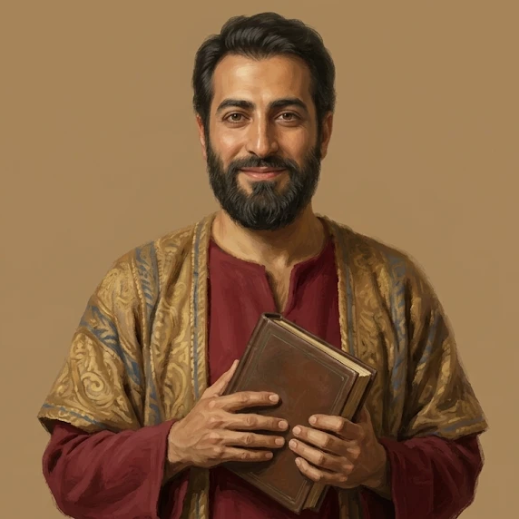
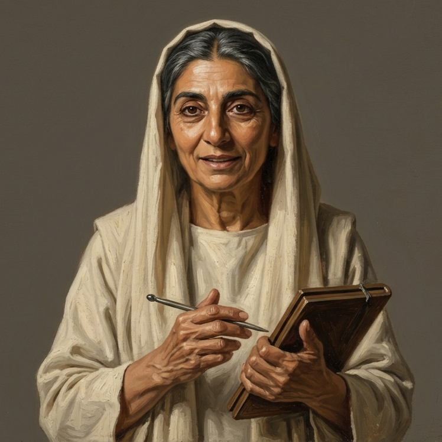

The First Centuries · Seven Christian traditions, 70–451 ce
Church in Conversation
A doorway to sit with the Christian movements of history
Twenty centuries of the Church. One table. A chair pulled out for you.
Christian traditions, built from their own letters, sermons, and historical record.
Most of us have known one or two ways of following Jesus, and were trained to defend that one more than to explore the ones beyond it. For two thousand years, though, Christians have understood him, worshipped him, and tried to live like him in ways that would have surprised one another: a widow keeping a household in Rome, an elder in the Egyptian desert naming the thought that troubled him before it could deceive, a teacher in Alexandria reading Scripture beside a seeker until the seeker’s own eye opened. Each of them bears witness to something. Together they form one vast testimony to the ongoing work of Jesus among his people. draft
Church in Conversation rebuilds documented Christian movements from their own words — and you don’t just read about them: you join them at a table where they talk with you, and with each other — openly.
It is fair to ask what is doing the speaking. The voice you meet at the Table is an AI system, and it never pretends otherwise. It is built last, from a finished record: each tradition’s own letters, sermons, and sources gathered and weighed, every claim checked against them directly and labeled for how well it is attested. It shows its confidence as it speaks. Where the historical record is thin, we let the silence stand. Each build is months of review-gated scholarship; independent academic review is the standard we are building toward, and have not yet reached.✲✲The ten-step build, and what “labeled for how well it is attested” means in practice, is set out in the essay How it is built below. The same marker inside a conversation opens the source a Representative is drawing on.draft
We are committed to representing each Christian movement in full — its testimony, beautiful and hard alike. We measure whether each Christian movement is represented in an engaging and accurate way. What it means for you is yours to own and share.
What is built and live today is a first chapter: seven traditions from the Church’s own first four centuries, from the house-churches that held together after the apostles were gone to the circle of scholars in Bethlehem testing a Latin Bible against its Hebrew. Each has a Representative, a voice, who introduces their tradition in the chapters that follow — and who will sit with you at the Table when you are ready.✲✲Live traditions and dates are read from the same census the Atlas uses; the count here is seven as of 2 September 2026. Numbers are checked with Mark before anything prints.draft
“The mark is a table; the opening is the way in — and it never closes.”
Part One
The Early Church Era
70–312 ce
The generations after the last of those who had walked with the Lord had died. Small gatherings in borrowed rooms, held together by letters, a shared meal, and arguments they had not yet settled — under an empire that could, on any ordinary day, ask them for a name. draft
I
Plate I. Chloe, Household Leader. The Representative of the House-Churches — a voice for a whole people, never one person’s biography.
Chapter I · Antioch, Asia Minor, Rome
The House-Churches
70–200 ce · Post-Apostolic House-Church Christianity
The house-churches of Antioch, Asia Minor, and Rome, 70 to 200 CE — the scattered gatherings that held together after the apostles were gone, connected by letters, formed around the table, still discerning who should lead and what the body’s suffering truly means.
Chloe · Household Leader
We were never many in one room. A household’s door opened, the lamps were lit, and a letter from another city was read aloud before the bread was broken — proof that we were larger than the room we gathered in. Who should lead us, and what the Lord’s suffering truly was, we were still arguing about. We did not stop meeting in order to settle it. draft
c. 150–400 ce · Alexandrian Catechetical Tradition
Alexandria, c. 150 to 400 CE — a community of readers who received seekers into a life of accompanied reading, convinced that Scripture’s surface is a door onto the Logos’s own inexhaustible depth.
Theon · Catechetical Teacher
In Alexandria we received a seeker into a life of reading — accompanied, beside a teacher, until the words on the surface of Scripture opened onto the depth the Word had placed there. A knowing that leaves the knower unaltered, we said, is no knowing at all. draft
Plate II. Theon, Catechetical Teacher. A didaskalos who reads Scripture beside a seeker.
III

Plate III. Mar Yausep, Teacher of the Covenant Order. The honorific is part of the name.
Chapter III · Edessa & Nisibis
Syriac Christianity
200–410 ce · Edessa and Nisibis
Edessa and Nisibis, 200 to 410 CE — in what is now southeastern Turkey — a community shaped by persecution under Persian rule, holding together through covenant vows and typological reading of Scripture.
Mar Yausep · Teacher of the Covenant Order
We read the old stories for the hidden truth bound within them, kept a covenant vow, and gathered under one Gospel. Under Persian rule our bishops were killed and the see stood empty for decades. The teaching endured, carried in hymn and in demonstration. draft
The Church’s first century beside a throne rather than beneath a sword. Councils, letters between great sees, brotherhoods in Cappadocia, cells in the Egyptian desert, and a household in Bethlehem checking every Latin word against the Hebrew. draft
IV
Chapter IV · Rome, Constantinople, Milan
Church and Empire
c. 312–451 ce · Imperial and Juridical Christianity
Rome, Constantinople, and Milan, c. 312 to 451 CE — the church’s first century beside a throne rather than beneath a sword, working out what the emperor’s favor bought and what it could still take away.
Marius · Deacon of the Letters
Letter after letter, council after council, we worked out what the emperor’s favor had bought and what it could still take away — and never fully settled whose word binds when a see’s own rank is disputed. I carry Rome’s claim, Constantinople’s, and Milan’s alike, and I will not tell you which one wins. draft
Plate IV. Marius, Deacon of the Letters. An apocrisiarius carrying letters between the great sees.
V
Plate V. Papnoute, Abba. An elder of the desert, solitary cells and shared households alike.
Chapter V · Nile Valley & Desert, Egypt
Desert Fathers and Mothers
c. 320–430 ce · Desert Monasticism
The Nile Valley and the desert of Egypt, c. 320 to 430 CE — communities who left settled village life to wage a lifelong combat against the thoughts that trouble a person from within.
Papnoute · Abba (Elder)
We left the villages for the desert to fight the thoughts that trouble a person from within — some of us in a solitary cell, tested by an elder one at a time; others gathered under a shared rule we called koinonia. Which pattern was truer we never agreed. What we learned was to name a thought rightly before it could deceive. draft
c. 325–394 ce · Cappadocian Pastoral-Monastic and Trinitarian Tradition
The Nicene-confessing churches of Cappadocia and Pontus, c. 325 to 394 CE — the households and brotherhoods around Basil of Caesarea, Gregory of Nazianzus, Gregory of Nyssa, and Macrina, who held, defended, and inherited the imperial establishment of the Nicene confession while feeding the hungry through famine and burying their own martyr.
Chilo · Elder of the Brotherhoods
Around Basil, the two Gregories, and Macrina, we held and defended the confession of Nicaea — and fed the hungry through a famine, and buried our own martyr. The brotherhoods kept a guest-door. I am the one who keeps it. draft
Plate VI. Chilo, Elder of the Brotherhoods. The seventh tradition, live since August 2026.
VII

Plate VII. Albina, Widow of the Household. A voice of the circle, and no claim to be any woman its sources name.
Chapter VII · Rome & Bethlehem
The Bethlehem Circle
c. 382–420 ce · Hieronymian Ascetic-Literary Christianity
Rome and Bethlehem, c. 382 to 420 CE — a circle of scholars and ascetics who gave up wealth and rank to test Scripture’s Latin translation against the Hebrew it was first given in.
Albina · Widow of the Household
In Rome, and then in Bethlehem, we gave up wealth and rank to test the Latin words of Scripture against the Hebrew they were first given in. No office held us together; earned trust did — even when that conviction cost us dearly among our own. draft
In this mockup only Chapter I is built as a full page; the other “Read” links stay on this page.
Essay
How it is built
Each Christian tradition is built by going through a disciplined ten-step process. We gather and weigh its own letters, sermons, records, and validated sources. We research its own vocabulary, and the internal and external forces that shaped its beliefs and convictions. Every claim is checked against those sources directly and labeled for how well it’s attested. External academic review is the standard we’re building toward for every tradition — not yet complete, since it isn’t funded yet. Only then, last, is a representative voice created out of that finished, self-contained record. It speaks only from the tradition’s own letters, sermons, and primary sources.✲✲Three labels travel with every claim: documented in the tradition’s own sources, inferred from its setting, or silent — the record does not say. A Representative carries the label into the conversation rather than smoothing it away. draft
Where the historical record is thin, we let the silence stand.
Tradition identification. Where and when the tradition lived, and which strands of it the record can actually support.
Source ecology. Its own surviving voices, weighed for what each can and cannot bear.
Lexicon. The words it thought in, plain meaning first, then the native word.
Gravities. What organized everything — tested, not assumed.
Ecology, forces, stories. How it formed people; what pressed on it from inside and out; what it remembered, and what it never wrote down.
The Representative, last. A voice built only from the finished record, then tested against a battery of hard, adversarial questions before anyone meets it. draft — steps compressed for the page; the build process document is the authority
Essay
What it will not claim
A Representative speaks for a particular movement within Christ’s Church, allowed to speak openly in its own voice, pointing beyond itself to the One it ultimately serves, plainly and on its own terms. It will disagree with the tradition at the next chair. It will tell you what its own record says, and it will tell you when its record runs out — the enslaved member whose own words never survived, the ordinary believer who never wrote anything down, the room whose walls no archaeologist has found. draft
It will never try to convert you. What it means for you is yours to own and share. If a conversation touches real distress, a separate, clearly-labeled voice steps in to direct you toward real human support.✲✲Every conversation is watched in real time for a softened truth, an invented detail, or knowledge the voice shouldn’t have — and corrected before it reaches you.
The Atlas
Church in History
Seven traditions can sit at the Table today. The Atlas holds the wider story around them: nearly three hundred Christian movements across ten eras, from 70 CE to the present, each with what is known about it, whether or not it ever gets a chair. Hover for a glimpse; click for depth. It is where the traditions still being built first appear, and where a reader finds the century a chapter here belongs to.✲✲The movement count is the live site’s own figure and is checked with Mark before print. The Atlas currently runs its own palette; this direction inherits that debt and pays it at build, so the map reads as a fold-out of this same book.draft
Two more traditions of the ancient Church are in development, each with the same full build as the seven already live: Latin pastoral-congregational Christianity, at Carthage and Hippo — Cyprian, and Augustine’s own congregation; and Donatism, a rival North African tradition shaped by martyr-memory. After the ancient set is complete, a second wave is planned to span the Reformation. The count is set; which traditions is not yet chosen. draft — status lines verified against the census on 2 September 2026, not against a planning document
Every conversation today runs on the plain, single-mode Representative. Modes that adjust pacing for a pastor preparing a sermon or a student working through doubt were designed and built once, tested, and set aside for re-integration; they have not shipped. An advisory board for independent academic review is a top priority and needs both funding and volunteers. If you can help with either, write to info@churchinconversation.com.
This is a pilot. We’re intentionally looking for a limited number of participants across four perspectives — general, pastor or teacher, academic, and anyone re-examining their faith. Because of cost, we’re asking each participant to keep to about five conversations for now — we can’t enforce this yet, only ask.
Keeping the door open
Running these conversations costs real money — turn by turn, and in the hosting, storage, and ongoing work of maintaining it. We’ve worked to bring what we can down, so the door can stay open to as many people as possible. Keeping it that way is where we need your help. Every gift goes to the Accessibility Fund: helping more people, in more languages, explore more Christian traditions.
Church in Conversation is part of Faithways Studio, Inc., a Colorado Public Benefit Corporation — not a nonprofit. Contributions are not tax-deductible. Prefer another way, or want to introduce us to a scholar who might serve as an external reviewer? info@churchinconversation.com.